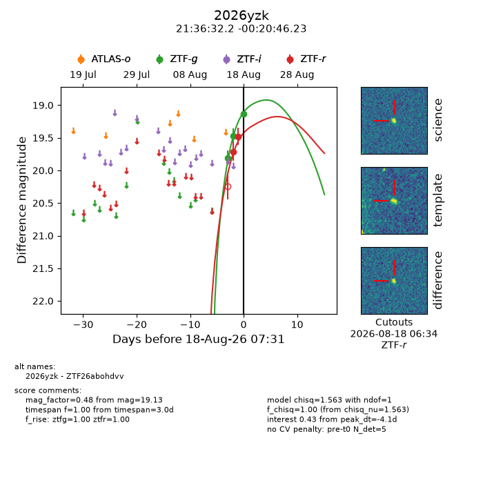
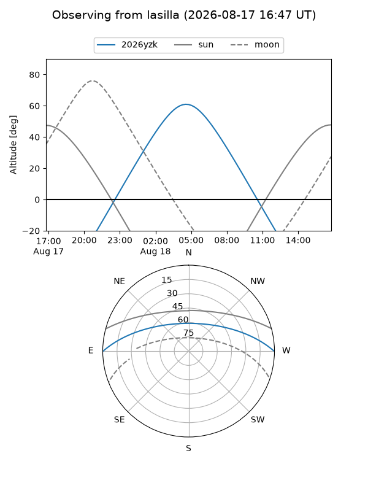
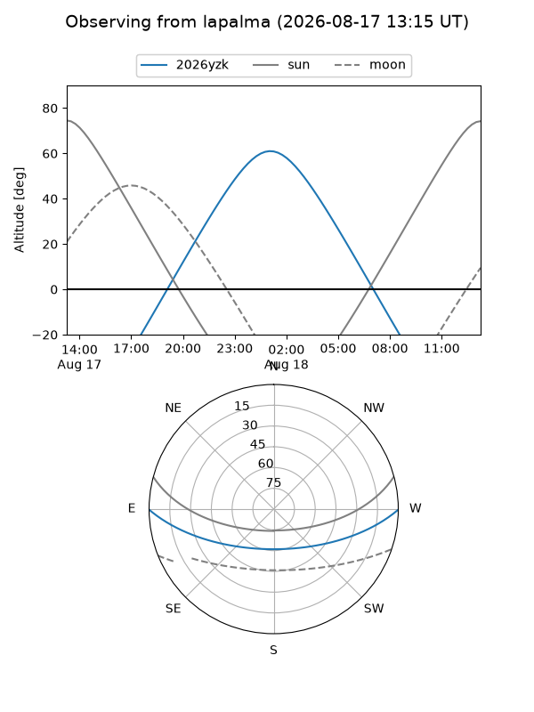
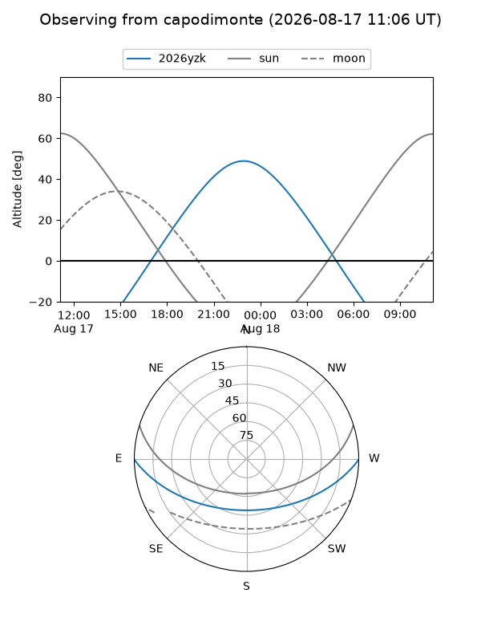
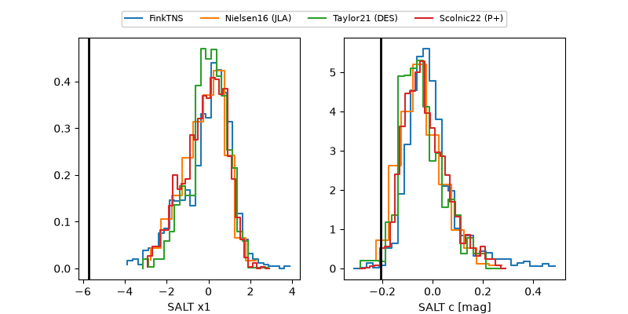

2026yzk
Target 2026yzk at 2026-08-18 07:34
Aliases and brokers:
FINK-ZTF: ztf.fink-portal.org/ZTF26abohdvv
Lasair-ZTF: lasair-ztf.lsst.ac.uk/objects/ZTF26abohdvv
ALeRCE-ZTF: alerce.online/object/ZTF26abohdvv
YSE-PZ: ziggy.ucolick.org/yse/transient_detail/2026yzk
TNS name: wis-tns.org/object/2026yzk
Direct TNS query: direct search
alt names
ZTF26abohdvv (ztf,fink_ztf)
2026yzk (tns,yse)
Coordinates:
equatorial (ra, dec) = 324.1342,-0.34617
equatorial (HMS+DMS) = 21:36:32.21,-00:20:46.23
galactic (l, b) = (54.3908,-36.14587)
Flags:
TNS type: nan
peak dt: -4.1
Photometry:
last ztfg=19.13, ztfr=19.48
3 ztfg, 2 ztfr detections
Lightcurve

Visibility



Additional plots
